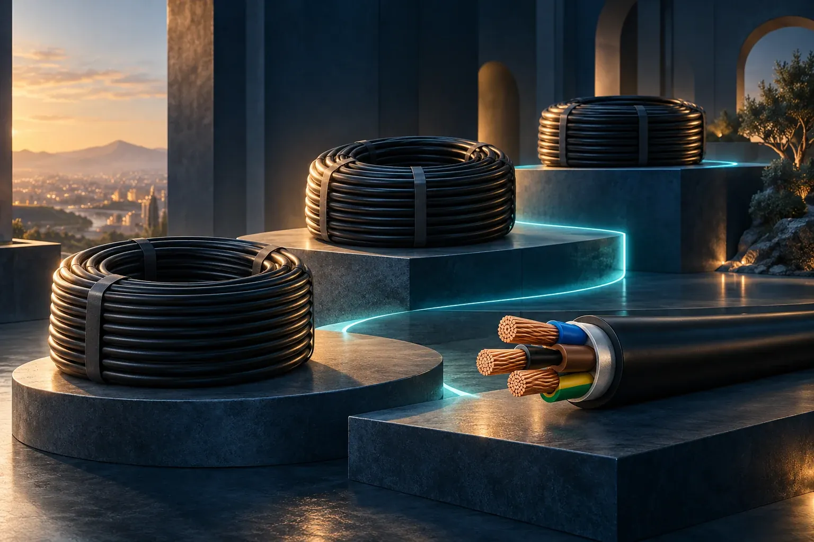

شناخت و تصمیم
دیدن رقبا و پیدا کردن فرصتها
اول سایتهای مشابه را ببینیم؛ بعد عمق اطلاعات کالا، طراحی، سئو و مسیر استعلام آنها را مقایسه کنیم.
خروجی این مرحلهفهرست رقبا و فرصتهایی که سایت ما باید پوشش دهد.
این صفحه نقطه شروع پرونده است. هر مرحله یک تصمیم را روشن میکند و شما را به گزارش، طرح یا برنامه اجرایی مرتبط میرساند.

ابتدا بازار و صفحات هدف را بشناسیم، سپس طرح و اجرای سایت را مشخص کنیم و در پایان تحویل و رشد را پیگیری کنیم. امنیت و سئو از شروع طراحی در تصمیمها حضور دارند.
تعداد محصولات و تنوعها، دستهبندی، برندها، آدرس و تماس، قواعد قیمت و فروش، طرح دلخواه و امکانات نسخه اول؛ یک فرم مرتب برای جمعبندی نیازهای واقعی پروژه.
لینک اصلی هر مرحله شما را به نقطه شروع همان کار میبرد؛ لینکهای کناری، جزئیات مرتبط را باز میکنند.
اول سایتهای مشابه را ببینیم؛ بعد عمق اطلاعات کالا، طراحی، سئو و مسیر استعلام آنها را مقایسه کنیم.
مشخص کنیم مشتری چگونه مدل کابل را پیدا میکند، چه مدرکی لازم دارد و کدام اقلام خرید آنلاین یا استعلامیاند.
نوع سبد و روش فروش را انتخاب کنیم و نقشه کلمه، صفحه و محتوا را پیش از ساخت مشخص کنیم. تجربه دیپلمسرا هم در گزارش آمده است.
طرحهای خانه، فهرست کالا، محصول، درباره، تماس و حساب را ببینیم و یک هویت منسجم برای اجرای المنتور انتخاب کنیم.
برای انتخاب فعلیِ وردپرس، اجرای وودمارت، المنتور و ووکامرس را به کارهای مشخص تبدیل کنیم؛ توسعه اختصاصی برای نیازهای اضافه بررسی شود.
دسترسی کارکنان، کد ورود، سند خصوصی، نسخه قیمت و برنامه بازیابی را پیش از فعالکردن حساب و فروش تعیین کنیم.
پس از آمادهشدن صفحات و داده واقعی، معیارهای تحویل بررسی شوند؛ سپس جستوجو، استعلام و فروش مبنای اصلاح ماهانه قرار بگیرند.
اگر بخش موردنظر را میدانید، از اینجا مستقیم باز کنید.
۱۰ سایت مرتبط در گزارش بررسی شدهاند؛ ۱۸ تصویر دسکتاپ و گوشی از ۹ سایت، مشاهده شکل صفحات را آسان میکنند.
دیدن اطلس رقبا ←